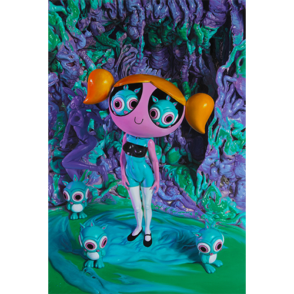
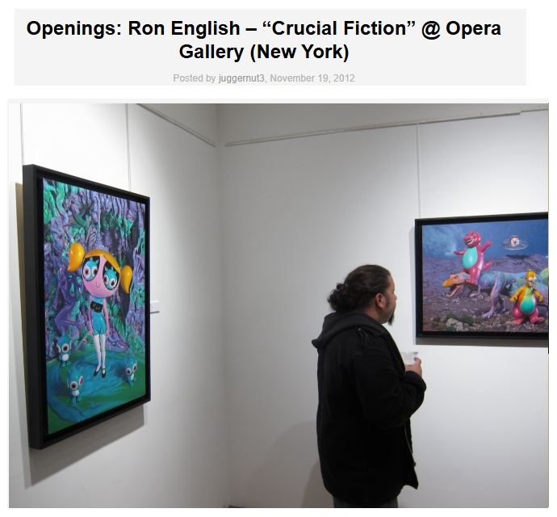
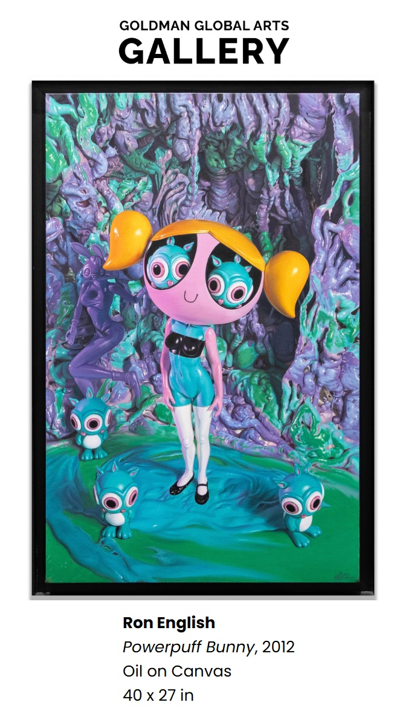
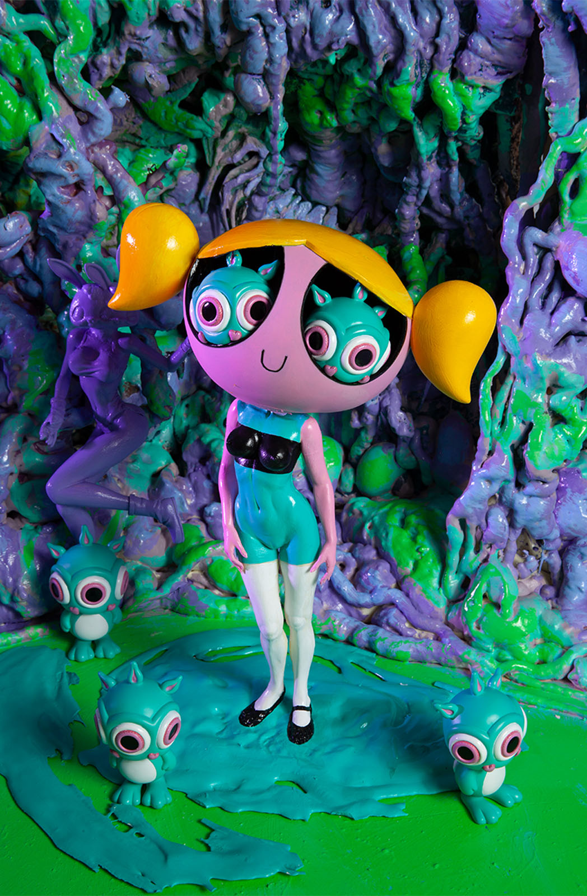
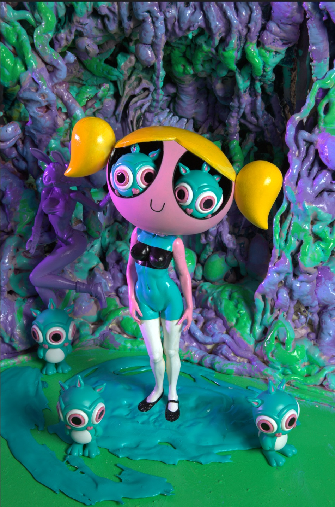
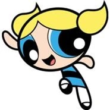

Exhibitions
Crucial Fiction, Opera Gallery, New York, New York, US, November 1–29, 2012.
Literature
Ron English, Death and the Eternal Forever (Korero Press, 2014), p. 79. ISBN 978-0957664920.
Ron English, Status Factory: The Art of Ron English (San Francisco: Last Gasp of San Francisco, 2014), p. 110. ISBN 978-0867197891.
Ron English, Original Grin: The Art of Ron English (Paris: Cernunnos, 2019), p. 380. ISBN 978-2374950938.
Notes
Also known as Powerpuff Bunnny.
This work appears in images published with coverage of Crucial Fiction at Opera Gallery, New York, available here, accessed April 8, 2026.
It also appears in exhibition photographs published in juggernut3, “Openings: Ron English – “Crucial Fiction” @ Opera Gallery (New York),” Arrested Motion, November 19, 2012, available here, accessed April 17, 2026.
It is also documented on GGA Gallery’s dedicated artwork page, available here, accessed April 8, 2026.
This work references Bubbles from The Powerpuff Girls; a representative image is available here.
Ancillary Documentation





